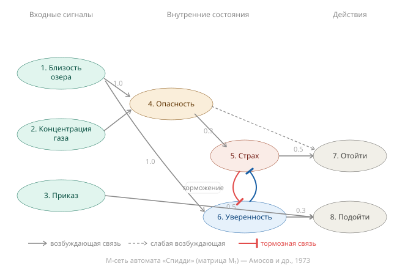

Аннотация
Что делает человека единым субъектом? Этот вопрос обычно не задают — не потому что он неважен, а потому что ответ кажется само собой разумеющимся. Мы воспринимаем себя как непрерывное «я» настолько естественно, что принимаем эту непрерывность за исходное свойство сознания. Она невидима именно потому, что работает безупречно.
Диссоциативное расстройство идентичности делает её видимой. Не как психиатрический курьёз и не как сенсационная история про «человека с 24 личностями» — а как естественный эксперимент, в котором механизм сборки субъекта даёт сбой и тем самым обнажает свою архитектуру. Именно поэтому DID интересен не психиатру, ставящему диагноз, а тому, кто хочет понять, как вообще устроено сознание.
Настоящее эссе предлагает взгляд на этот феномен через оптику советской нейропсихологии и физиологии — синдромного анализа Александра Лурии и теории функциональных систем Петра Анохина. Этот язык, незаслуженно остающийся на периферии мировых дискуссий о сознании, позволяет сформулировать то, чего не могут ни психиатрическая классификация, ни нейровизуализация, ни современные теории сознания: механизм, посредством которого множество конкурирующих нейрокогнитивных процессов непрерывно собирается в единого субъекта — и что происходит, когда эта сборка нарушается.
Центральный тезис: единство «я» — не данность и не примитив. Это активное достижение метарегулирующей функциональной системы, надстроенной над стигмергическим базовым слоем координации. DID — это не поломка субъекта, а его патологическая фрагментация: узлы системы сохранны, нарушена метарегуляция их организации. Понять это различие — значит сделать шаг от феноменологии к механизму, от диагноза к объяснению.
Введение
Случай, ставший мифом
В 1978 году американский суд впервые в истории вынес оправдательный приговор по тяжким уголовным обвинениям — похищение, ограбление, изнасилование — на основании диагноза «множественное расстройство личности». Обвиняемым был 22-летний Билли Миллиган. Девять психиатров и психологов обследовали его в ходе досудебной экспертизы. Психолог Дороти Тернер зафиксировала не менее десяти альтер-личностей с различными возрастами, полом, акцентами и показателями IQ — от ниже 70 до выше 130. 4 декабря 1978 года судья Джей Флауэрс признал Миллигана невменяемым. Прецедент был создан.
Широкой публике этот случай стал известен из книги Дэниела Киза «Множественные умы Билли Миллигана» (1981). Киз получил беспрецедентный доступ к медицинским записям и судебным документам — но создал литературную реконструкцию, а не клинический отчет. Именно через эту призму мир и усвоил образ человека с «24 полноценными личностями»: с внутренней темной комнатой, «пятном света» в центре, иерархией персонажей и драматическими переключениями между ними.
Этот образ — мифологизация. Строгой научной фактологии по делу Миллигана крайне мало: рецензируемых клинических публикаций практически нет, основной источник — беллетристика, а судебный контекст диагностики неизбежно накладывает свои искажения. Среди обследовавших Миллигана специалистов была Корнелия Уилбур — психиатр, печально известная по делу «Сибил», которое впоследствии оказалось во многом ятрогенным конструктом. Скептицизм здесь вполне уместен.
Тем не менее прежде чем перейти к критическому разбору, необходимо зафиксировать, о чем, собственно, идет речь. Диссоциативное расстройство идентичности (ДРИ; в англоязычной литературе — DID, dissociative identity disorder; ранее — расстройство множественной личности, MPD) — психическое расстройство из группы диссоциативных, при котором идентичность человека не является целостной: складывается впечатление, что в теле одного человека существует несколько различных личностей, или, в более строгой терминологии, — эго-состояний, альтеров. В определенные моменты происходит «переключение»: одна часть идентичности сменяет другую. Помимо явных переключений возможно и так называемое пассивное влияние — когда часть идентичности не берет на себя исполнительный контроль, но так или иначе вмешивается в функционирование: голоса, мысли, воспринимаемые как чужие, действия, которых человек не помнит или не намеревался совершать. Альтеры могут различаться по полу, возрасту, характеру, мировоззрению, умственным способностям; они могут как разделять воспоминания друг с другом, так и быть взаимно амнестичны. До недавнего времени расстройство считалось редким; современные исследования оценивают его распространенность в 1–3% популяции и около 5% среди пациентов психиатрических стационаров.
И тем не менее — отмахнуться не получается.
Диссоциативное расстройство идентичности как клиническая сущность имеет нейробиологический след, который не сводится к симуляции или внушению. Систематические исследования выявили объективные различия между альтерами на уровне ЭЭГ-когерентности и нейровизуализации: дисфункция префронтальной коры, изменения в хвостатом ядре, передней поясной извилине, инсуле — структурах, причастных к интеграции непрерывного субъекта. Задокументированы случаи значимой вариабельности почерка и даже смены ведущей руки между альтерами — то есть перестройки на уровне моторных программ, а не только нарратива.
Это означает, что за мифом стоит реальный феномен. Не «24 души в одном теле» — но нечто, требующее объяснения.
Настоящий вопрос, который ставит этот случай, — не психиатрический. Он фундаментальный:
Что именно удерживает человека единым субъектом?
DID интересен не множественностью личностей, а редкой возможностью увидеть механизм, который в норме совершенно невидим — именно потому, что работает безупречно. Патология здесь выступает как естественный эксперимент: она обнажает архитектуру, скрытую за прозрачностью нормального функционирования.
Цели и структура работы
Настоящее эссе преследует три взаимосвязанные цели.
Первая — критически разобрать фактологическую базу DID: что в ней подтверждено объективными методами, что сомнительно, и почему существующий исследовательский инструментарий принципиально ограничен в своих возможностях.
Вторая — предложить альтернативный язык описания феномена, опирающийся на традицию советской нейропсихологии и физиологии: синдромный анализ Александра Лурии и теорию функциональных систем Петра Анохина. Этот язык позволяет говорить не о симптомах и классификациях, а о функциональной организации процессов — и именно поэтому он оказывается продуктивнее психиатрической рамки применительно к DID.
Третья — сформулировать исследовательскую программу: конкретные проверяемые гипотезы о механизме формирования альтеров и критерии их фальсифицируемости.
Работа организована следующим образом. Части I и II посвящены фактологии и методологическому диагнозу: что известно о DID и почему психиатрическая рамка не дает ответа на ключевой вопрос. Части III и IV вводят теоретический язык: синдромный анализ Лурии и теорию функциональных систем Анохина. Часть V разбирает контрастный случай — актера и разведчика — как доказательную базу для операционального критерия нормы и патологии. Часть VI рассматривает схему селектора через модели Амосова. Часть VII вводит понятие стигмергии как базового слоя координации, обнажающегося при DID. Часть VIII собирает все элементы в целостную системную модель: архитектуру нормального функционирования, механизм её патологической фрагментации и операциональные следствия, поддающиеся независимой проверке. Часть IX формулирует конкурирующие гипотезы о механизме формирования альтеров и критерии их фальсифицируемости. Заключение возвращает к исходному вопросу — теперь уже с ответом.
Часть I. Что мы знаем и чего не знаем
Прежде чем оценивать доказательную базу, стоит оглянуться назад — феномен, который мы собираемся разбирать, значительно старше самого диагноза.
I.1. Исторический контекст: феномен старше диагноза
Случай Миллигана не возник на пустом месте. Прежде чем разбирать фактологическую базу современных исследований, важно зафиксировать: феномен множественной идентичности фиксируется в источниках задолго до появления психиатрии как дисциплины — и это само по себе значимое обстоятельство.
Отдельные исследователи усматривают его следы ещё в палеолитических наскальных изображениях шаманов, «перевоплощавшихся» в животных или принимавших в себя духов. Многие случаи того, что в прежние эпохи описывалось как одержимость демонами или духами, современные клиницисты склонны рассматривать как возможные проявления диссоциативной патологии — с поправкой на то, что ретроспективная диагностика через столетия методологически рискованна.
Более надёжная документированная история начинается с конца XVIII века.
В 1784 году Арман де Пюисегюр, ученик Месмера, вводя своего работника Виктора Раса в сомнамбулическое состояние, обнаружил, что тот по пробуждении не помнит ничего из произошедшего в изменённом состоянии — тогда как в самом этом состоянии полностью осознавал события обоих планов. Пюисегюр назвал феномен «магнетическим сомнамбулизмом» и впервые поставил вопрос о возможности существования двух независимых потоков психической жизни в одном человеке.
В 1791 году Эберхард Гмелин описал «меняющуюся личность» у 21-летней немецкой девушки: вторая личность говорила по-французски и называла себя французской аристократкой. Гмелин увидел в этом возможность понять механизмы формирования личности — интуиция, опередившая своё время почти на два столетия.
В 1816 году в медицинской прессе появилось описание случая Мэри Рейнольдс с «дуальной личностью». В 1838 году Шарль Депен описал аналогичный случай у 11-летней девочки. В 1876 году Эжен Азам опубликовал детальное наблюдение за пациенткой Фелидой Икс — один из первых систематических клинических отчётов о множественной идентичности.
Концептуальный перелом произошёл в 1888 году, когда Буррю и Бюрро опубликовали наблюдение за пациентом Луи Виве, у которого было зафиксировано шесть различных личностей с раздельными воспоминаниями, индивидуальными паттернами мышечных сокращений и привязкой каждой личности к определённому периоду жизни. Именно тогда Пьер Жане ввёл понятие «диссоциации» и предложил концепцию сосуществующих психических центров в рамках одного индивида. Это был первый шаг к системному теоретическому языку для описания феномена.
В 1906 году Мортон Принс опубликовал подробное клиническое исследование пациентки с тремя личностями — «Диссоциация личности» — один из немногих ранних случаев, в котором терапевт поставил не только описательную, но и терапевтическую задачу: объединить личности в единое целое. Показательно, что именно эта задача по-прежнему остаётся одной из центральных в современной терапии DID — и по-прежнему не имеет надёжного решения.
Затем история сделала неожиданный поворот. В 1943 году Стенгел утверждал, что состояние множественной личности более не встречается в клинической практике. Диагноз фактически исчез — чтобы вернуться с удвоенной силой в 1970-х после публикации «Сивиллы» и «Трёх лиц Евы», а затем достичь пика в деле Миллигана.
Этот исторический контур сам по себе информативен. Он говорит о том, что феномен не является изобретением американской психиатрии 1970-х годов — его наблюдали независимо друг от друга в разных странах и в разные эпохи. Но он также говорит о том, что распространённость диагноза резко меняется в зависимости от культурного контекста и теоретических ожиданий клиницистов. Оба наблюдения верны одновременно — и именно это делает феноменологию DID методологически сложным объектом: за ним стоит нечто реальное, но культурно оформленное.
Жане, наблюдавший своих пациентов в конце XIX века без гипноза, без судебного контекста и без голливудских нарративов об «альтерах», оставил описания, которые по клинической точности превосходят многие современные публикации. И именно он первым сформулировал то, что мы сегодня называем диссоциацией, — задолго до того, как это понятие стало предметом споров.
I.2. Фактология без украшений
Прежде чем строить теоретическую модель, необходимо честно разобраться с фактической базой. Она неоднородна — и это само по себе важная информация.
I.2.1. Что подтверждено
Нейровизуализация. Систематический обзор тринадцати нейровизуализационных исследований, охвативших 51 пациента с DID, выявил устойчивый паттерн: дисфункция префронтальной коры, изменения в хвостатом ядре, передней поясной извилине и инсуле. Это не случайный набор структур — речь идёт о сетях, причастных к интеграции непрерывного субъекта, мониторингу конфликтов, интероцепции и переключению поведенческих программ. Мозг при DID отличается от нормы объективно, на уровне нейронной активности.
Del Casale A. et al. Functional Neuroimaging in Dissociative Disorders: A Systematic Review. J. Pers. Med. 2022, 12, 1405. https://www.ncbi.nlm.nih.gov/pmc/articles/PMC9502311/
ЭЭГ. Первое исследование ЭЭГ-когерентности при DID (Hopper et al., 2002) сравнивало пациентов с DID и профессиональных актёров, симулирующих смену личности. У пациентов выявлены значимые различия когерентности между хост-личностью и альтерами — когерентность у альтеров ниже. Примечательно, что актёры при симуляции давали статистически схожий паттерн — это ставит вопросы, к которым мы вернёмся, но не отменяет факт объективных физиологических различий у самих пациентов.
Hopper A. et al. EEG Coherence and Dissociative Identity Disorder: Comparing EEG Coherence in DID Hosts, Alters, Controls and Acted Alters. Journal of Trauma & Dissociation, 2002, vol. 3, no. 1, pp. 75–88. https://www.tandfonline.com/doi/abs/10.1300/J229v03n01_06
Графомоторика. Задокументирована значимая вариабельность почерка между альтерами — существенно выше, чем у одного человека в норме при разных условиях. Зафиксированы случаи смены ведущей руки между альтерами. Это уже не уровень нарратива или поведения — это перестройка моторных программ. Льюис и соавторы (1997), исследовавшие двенадцать убийц с диагнозом DID, рассматривали изменения почерка как один из объективных маркеров реальности альтеров: выраженные изменения стиля письма и/или подписи были задокументированы в 10 из 12 случаев.
Lewis D.O. et al. Objective Documentation of Child Abuse and Dissociation in 12 Murderers With Dissociative Identity Disorder. American Journal of Psychiatry, 1997, 154:1703–1710. https://psychiatryonline.org/doi/10.1176/ajp.154.12.1703
Память: парадоксальные данные. Пациенты с DID, как правило, сообщают об амнезии между альтерами — один не помнит, что делал другой. Однако объективное тестирование памяти нередко показывает её сохранность: информация, полученная одним альтером, физиологически доступна другому. Это означает нарушение не хранения, а доступа — что принципиально важно для понимания механизма.
I.2.2. Что сомнительно
Культурная специфика и «эпидемия». DID как массовый диагноз — феномен преимущественно североамериканский и хронологически ограниченный: 1970–1980-е годы. За пределами США и Канады случаи редки до исчезновения. Это классический признак культурно-специфического синдрома — состояния, чья феноменология формируется культурными ожиданиями, а не только нейробиологией.
Ятрогения. Николас Спанос убедительно аргументировал: DID в значительной мере является ятрогенным артефактом — продуктом внушаемого пациента и некритичного терапевта. Его позиция изложена в монографии «Multiple Identities and False Memories: A Sociocognitive Perspective» (APA, 1996). Случай «Сибил», долгое время считавшийся эталонным, фактически разоблачён: пациентка впоследствии призналась терапевту в симуляции, а сам терапевт — Корнелия Уилбур, та самая, что обследовала Миллигана — активно формировала «личности» через гипноз и внушение. Уилбур присутствует в обоих ключевых случаях. Это не мелкая деталь.
Spanos N.P. Multiple identity enactments and multiple personality disorder: a sociocognitive perspective. Psychol Bull. 1994, 116(1):143–65. https://pubmed.ncbi.nlm.nih.gov/8078970/
>
Spanos N.P. Multiple Identities and False Memories: A Sociocognitive Perspective. APA, 1996. https://www.apa.org/pubs/books/4318541
Психоактивные вещества (ПАВ) как смешивающий фактор (конфаундер — это переменная, которая одновременно связана и с изучаемой причиной, и с изучаемым следствием, искажая интерпретацию данных: невозможно понять, что именно вызывает наблюдаемый эффект). Именно такую роль играет употребление алкоголя, наркотиков и психотропных препаратов при DID: связь задокументирована, однако её природа методологически крайне запутана. Здесь действуют как минимум три механизма, которые сложно разграничить:
+ Самолечение: диссоциативные симптомы развиваются как защитная реакция на травму; вещества используются для подавления аверсивных состояний, но в результате усиливают диссоциацию — возникает порочный круг.
+ Диагностическая маскировка: провалы памяти характерны и для DID, и для алкогольного злоупотребления. При сочетании обоих практически невозможно разграничить амнестические эпизоды — переключение альтеров или алкогольный блэкаут. Многие пациенты с сочетанной патологией не получают адекватного диагноза до прекращения употребления.
+ «Химическая диссоциация»: предложена гипотеза, согласно которой сами эффекты веществ поддерживают и закрепляют диссоциативный механизм — особенно если первичная диссоциация сформировалась в детстве под влиянием травмы.
Ни прямых доказательств того, что ПАВ вызывают DID, ни надёжных данных о том, как именно разграничить симптоматику при сочетанном употреблении — нет. Это существенный методологический пробел, особенно значимый для оценки резонансных случаев, включая Миллигана, чья история злоупотреблений задокументирована недостаточно.
McDowell D.M. et al. Dissociative identity disorder and substance abuse: the forgotten relationship. J Psychoactive Drugs. 1999, 31(1):71–83. https://pubmed.ncbi.nlm.nih.gov/10332641/
Судебный контекст. Диагноз Миллигану ставился в условиях судебной экспертизы, где у всех участников процесса были сильные стимулы к определённому исходу — у защиты, у самого пациента, отчасти у экспертов. Судебная психиатрия и клиническая нейропсихология работают в принципиально разных эпистемических условиях. Смешивать их нельзя.
Отсутствие систематических клинических наблюдений. По делу Миллигана нет ни одной рецензируемой публикации в научном журнале. Основной источник — беллетристика. Никаких лонгитюдных нейрофизиологических данных, никакой гистологии, никакого непрерывного мониторинга переключений с объективной регистрацией. Случай попал в культуру, минуя нормальную научную верификацию.
I.3. Итог: что это означает
Перед нами неудобная картина. С одной стороны — объективные нейробиологические данные, которые не позволяют свести DID к чистой симуляции или ятрогенному конструкту. С другой — крайне слабая фактологическая база по конкретным резонансным случаям и очевидная роль культурных сценариев в формировании феноменологии.
Из этой картины следует не скептический вывод («DID не существует»), а методологический: мы имеем дело с реальным нейробиологическим феноменом, описание которого в большинстве случаев построено на инструментах, принципиально неспособных вскрыть его механизм.
Психиатрическая рамка фиксирует симптомы и классифицирует их. Нейровизуализация даёт «цветные карты» активности. Но вопрос о том, какая именно функциональная организация нервной системы обеспечивает единство субъекта — и что именно в ней нарушается при DID — этим инструментарием не решается.
Это не упрёк психиатрии. Это указание на границу её компетенции — и на необходимость другого языка описания. В дальнейшем мы не будем вторгаться в специфическую область психиатрической классификации, диагностических критериев и терапевтических протоколов — это предмет отдельной дисциплины со своими задачами и инструментами. Нас интересует другое: фундаментальный, онтологический вопрос о природе самого феномена. Что такое единство субъекта как организационный принцип нервной системы? Каков механизм его поддержания в норме — и его распада в патологии? DID здесь выступает не как диагноз, требующий уточнения, а как естественный эксперимент, открывающий доступ к этим вопросам.
Часть II. Методологический диагноз
Фактологическая картина, изложенная в предыдущей части, не просто указывает на слабость отдельных исследований. Она симптом более глубокой методологической проблемы — проблемы, которая касается не только DID, но и всего комплекса дисциплин, претендующих на объяснение феномена сознания. Ставится вопрос: а в чём, собственно, причина этой недостаточности? Почему сразу несколько развитых исследовательских традиций — при всём различии инструментов и подходов — упираются в один и тот же потолок?
II.1. Психиатрия: застряла на феноменологии
Современная психиатрия построена сверху вниз: от наблюдаемого поведения и субъективных отчётов — к классификации. DSM и МКБ фиксируют кластеры симптомов и присваивают им имена. Диагноз DID — это описание того, что наблюдается: множественные идентичности, амнезия между ними, нарушение непрерывности личности. Вопрос о том, почему это происходит и какой механизм за этим стоит, классификация принципиально не ставит.
Это не недостаток конкретных исследователей. Это архитектурное решение: психиатрическая диагностика создавалась как инструмент клинической практики и юридической экспертизы, а не как теория механизмов. Она решает задачи, для которых создана — и не решает задачи, которые перед ней не ставились.
Проблема возникает тогда, когда эта рамка начинает восприниматься как исчерпывающее описание феномена. Когда «диагноз поставлен» означает «феномен объяснён». Именно здесь психиатрия застревает.
Любую патологию можно рассматривать на трёх уровнях. Уровень I — триггеры: что запускает патологический процесс. Уровень II — патогенетические механизмы: через какие промежуточные процессы разнородные триггеры приводят к схожему результату. Уровень III — системная патология: феноменологически наблюдаемый результат. Психиатрия работает преимущественно на уровнях I и III — описывает триггеры и фиксирует феноменологию. Уровень II — механизмов конвергенции — остаётся в значительной мере незаполненным. Без него невозможно ни понять природу расстройства, ни выработать обоснованные подходы к лечению, ни сформулировать проверяемые гипотезы о механизме.
II.2. Когнитивная нейронаука: корреляты вместо механизмов
Включение нейровизуализационных данных в исследования DID создаёт иллюзию нейробиологической глубины. Цветные карты активации мозга убедительно выглядят — и действительно несут информацию о том, какие области вовлечены. Но между «вовлечена префронтальная кора» и «вот как устроен механизм фрагментации субъекта» — огромная объяснительная пропасть.
Нейровизуализация отвечает на вопрос: где? Какие области активны, какие структуры отличаются по объёму или связности. Это важная информация — но она остаётся на уровне топографии. Топография не есть архитектура. Коррелят не есть механизм.
Знание того, что при DID изменена активность хвостатого ядра, не объясняет DID — пока не будет понята функциональная организация, которая связывает эту активность с феноменом множественных идентичностей. Аналогично: знание того, что при раке изменяется активность определённых генов, само по себе не объясняет онкогенез — пока не будет понята организация сигнальных путей, через которые эти изменения реализуются в патологию.
Современная когнитивная нейронаука располагает инструментами, о которых Лурия не мог мечтать. И тем не менее — парадокс — в понимании таких феноменов, как DID, она нередко даёт меньше, чем давало длинное клиническое наблюдение середины XX века. Причина не в мощности инструментов, а в характере задаваемых вопросов. Сканирование фотографирует результат. Оно не реконструирует функциональную организацию процессов, которая этот результат производит.
II.3. Психодинамический подход: механизм без верификации
Психоанализ и психодинамическая традиция — единственное из четырёх направлений, которое исторически претендовало именно на описание механизма, а не феноменологии. Вытеснение, диссоциация как защитный механизм, расщепление эго — это не классификации симптомов, а утверждения о том, как устроены психические процессы.
Это делает психодинамический подход методологически более амбициозным — и одновременно более уязвимым. Предложенные механизмы принципиально нефальсифицируемы в экспериментальном смысле: они не порождают предсказаний, которые можно проверить и опровергнуть. «Диссоциация как защита от травмы» — это интерпретативная рамка, а не механистическая гипотеза. Она объясняет любой наблюдаемый результат постфактум, не предсказывая ничего заранее.
Кроме того, психодинамический подход исторически тяготеет к нарративной реконструкции индивидуальной истории пациента — что ценно терапевтически, но ограниченно объяснительно. Рассказ о том, почему у данного человека развился DID в контексте его биографии, не является ответом на вопрос о том, каков общий механизм этого явления как такового.
Теория есть. Проверяемости — в строгом смысле — нет.
II.4. Теории сознания: единство субъекта как скрытая аксиома
Наиболее неожиданный методологический провал обнаруживается там, где его меньше всего ожидаешь: в современных теориях сознания, претендующих на фундаментальное объяснение психической жизни. DID является для них неудобным тест-кейсом — именно потому, что обнажает скрытую аксиому, на которой все они построены.
Деннет и нарративное «я». Согласно теории множественных черновиков, сознание не имеет единого «картезианского театра» — привилегированного места, где всё сходится. Это поток конкурирующих черновиков, ни один из которых не является окончательным. «Я» — не субстрат, а центр нарративной гравитации: полезная фикция, порождаемая мозгом для организации поведения. Казалось бы, DID здесь не аномалия, а обнажение нормы: нарративных центров просто стало несколько явных. Но именно здесь возникает неудобный вопрос, который теория не разрешает: что именно индивидуализирует и стабилизирует каждый из этих центров, если единого субъекта никогда и не было? Деннет растворяет проблему единства — но тем самым лишает себя языка для описания его патологической множественности.
Блок и двойственность сознания. Нед Блок проводит принципиальное различие между доступным сознанием (A-consciousness) — информацией, доступной для отчёта, рассуждения и управления поведением — и феноменальным сознанием (P-consciousness) — субъективным качеством опыта, тем самым «каково это». При DID альтеры явно различаются по доступному сознанию: разные воспоминания, разный доступ к содержанию, разные поведенческие программы. Но есть ли у каждого альтера собственное феноменальное сознание — своё неповторимое «каково это быть им»? Если да — мы имеем дело с несколькими потоками феноменального опыта в одном теле. Теория Блока не предоставляет инструментов для ответа на этот вопрос.
Чалмерс и трудная проблема. «Трудная проблема» сознания по Чалмерсу — вопрос о том, почему вообще существует субъективный опыт, почему физические процессы сопровождаются феноменальным измерением. При DID эта проблема не просто сохраняется — она умножается. Если у каждого альтера есть своё «каково это быть им», мы получаем несколько онтологически самостоятельных потоков субъективного опыта при одном нейронном субстрате. Если нет — непонятно, чем альтеры принципиально отличаются от поведенческих программ без субъективного измерения. Чалмерс не может ответить на этот вопрос, потому что трудная проблема не имеет операциональных критериев — и DID это обнажает с особой наглядностью.
Тонони и интегрированная информация. Теория интегрированной информации (ИИТ) определяет сознание через меру φ (фи) — количество интегрированной информации в системе. Высокая φ означает высокую степень сознания; низкая — её отсутствие. DID создаёт для ИИТ структурную проблему: если метарегулирующая система дезинтегрирована, суммарная φ системы должна снижаться — но при этом каждая квазиавтономная конфигурация сохраняет собственную внутреннюю связность и, по всей видимости, собственную локальную φ. Получается несколько локальных максимумов φ вместо одного глобального? Теория не предусматривает этого случая и не имеет инструментов для его описания.
Баарс и глобальное рабочее пространство. Согласно теории глобального рабочего пространства, сознание — это широковещательная система: информация из локальных специализированных процессоров транслируется в единое рабочее пространство, доступное всем остальным процессорам. Единственность рабочего пространства — не вывод теории, а её исходная архитектурная аксиома. DID ставит прямой вопрос: что происходит, когда рабочих пространств становится несколько? Переключаются ли они поочерёдно? Функционируют параллельно? Теория не предусматривает ответа — потому что вопрос разрушает её основание.
II.5. Общий диагноз
Все четыре традиции обнаруживают при столкновении с DID одну и ту же глубинную проблему: единство субъекта является для них либо явной, либо скрытой аксиомой. Психиатрия принимает его как данность, классифицируя его нарушения. Когнитивная нейронаука ищет его нейронные корреляты, не задаваясь вопросом о механизме его производства. Психодинамический подход постулирует его нарушение через нефальсифицируемые конструкты. Теории сознания либо растворяют его (Деннет), либо упираются в него как в непреодолимое препятствие (Чалмерс, Тонони, Баарс).
Ни одна из этих традиций не располагает языком для описания единства субъекта как динамически производимого системного свойства — того, что может быть организовано, нарушено и реорганизовано. Именно этот язык необходим. И именно он был разработан — в советской нейропсихологии и физиологии — Александром Лурией и Петром Анохиным.
Часть III. Утраченная традиция: Лурия. Синдромный анализ. Длинное наблюдение против сканирования. Письмо как объективный маркер.
Александр Романович Лурия — фигура, которую на Западе чаще цитируют, чем читают. Его имя появляется в учебниках по нейропсихологии как историческая отсылка — наряду с Брока и Вернике. Это глубокое заблуждение относительно масштаба и актуальности его работы — и именно здесь нам предстоит это показать.
Лурия не просто описывал случаи. Он строил методологию — способ думать о мозге и психике, принципиально отличный от того, который доминирует сегодня.
III.1. Синдромный анализ: от симптома к системе
Центральный инструмент луриевской нейропсихологии — синдромный анализ. Его логика проста, но радикально отличается от психиатрической классификации.
Психиатрия спрашивает: какие симптомы наблюдаются, и в какую категорию они складываются?
Лурия спрашивал: какая функциональная система нарушена — и как характер её распада позволяет реконструировать архитектуру нормального функционирования?
Это не разные способы делать одно и то же. Это принципиально разные эпистемические установки. Для Лурии патология интересна не сама по себе, а как естественный эксперимент над нормой. Повреждение — это не просто беда пациента; это редкая возможность увидеть, как устроена система, которую в норме невозможно разобрать на части, не разрушив.
Именно поэтому луриевский синдромный анализ требует того, чего современная нейронаука почти утратила: длинного наблюдения. Не срез активности мозга в момент выполнения задания. Не анкета с симптомами. А месяцы и годы системного наблюдения за тем, как человек функционирует в разных условиях, как меняется его поведение, как распадаются и восстанавливаются функции.
Две книги Лурии демонстрируют этот подход в его предельном выражении: «Маленькая книжка о большой памяти» — многолетнее наблюдение за мнемонистом Шерешевским; «Потерянный и возвращённый мир» — наблюдение за раненым с обширным повреждением мозга, восстанавливающим функции на протяжении многих лет. В обоих случаях ценность исследования определяется не мощностью оборудования, а глубиной и длительностью наблюдения.
Применительно к DID этот контраст разителен. Случай Миллигана наблюдался в условиях судебной экспертизы и журналистского интереса. Систематического луриевского наблюдения — с картой функций, с фиксацией динамики, с реконструкцией того, что именно нарушено в функциональной организации — не проводилось ни по этому, ни по большинству других резонансных случаев DID.
III.2. Длинное наблюдение против сканирования
Современная нейронаука располагает инструментами, о которых Лурия не мог мечтать: фМРТ, ПЭТ, ЭЭГ высокого разрешения, трактография. И тем не менее — парадокс — в понимании таких феноменов, как DID, она нередко даёт меньше, чем давало длинное клиническое наблюдение середины XX века.
Причина не в мощности инструментов, а в характере задаваемых вопросов.
Сканирование отвечает на вопрос: где? Какие области активны, какие структуры отличаются по объёму или связности. Это важная информация — но она остаётся на уровне топографии. Топография не есть архитектура.
Длинное наблюдение отвечает на вопрос: как организовано? Какие функции связаны, какие диссоциируют при повреждении, как система перестраивается во времени. Это вопрос о функциональной организации — о том, что Лурия называл функциональными системами.
Функциональная система в луриевском понимании — не анатомическая структура и не локус в мозге. Это динамическая организация нейронных процессов, которая складывается под конкретную задачу и может рекрутировать ресурсы из разных областей мозга. Она реальна — но не локализуема статически. Именно поэтому фМРТ-срез её не схватывает: он фотографирует мгновение, а функциональная система существует во времени.
Для DID это означает следующее: вопрос не в том, какие области мозга активны при переключении альтеров. Вопрос в том, как организованы процессы, обеспечивающие в норме единство субъекта — и что именно в этой организации нарушается. Ответ на этот вопрос требует длинного наблюдения, а не серии сканов.
III.3. Письмо как объективный маркер
Одна из ранних и наиболее продуктивных идей Лурии — использование письма как объективного индикатора внутренних состояний. Идея восходит к совместным работам с Выготским и к экспериментам с так называемым «аффективным следом»: человек может декларировать одно, но моторная система — темп, нажим, ритм, пространственная организация письма — выдаёт другое.
Логика здесь строго нейропсихологическая: письмо — не просто текст. Это:
- моторная программа — последовательность высокоавтоматизированных движений, выработанных годами практики;
- временна́я организация — ритм и темп, отражающие текущее функциональное состояние нервной системы;
- телесная схема — пространственная развёртка движения, завязанная на проприоцепцию и телесное самоощущение;
- аффективная динамика — нажим и напряжение как непосредственное выражение аффекта, минующее сознательный контроль.
Это делает графомоторику уникальным объектом: она одновременно доступна наблюдению и в значительной мере независима от нарратива. Человек может рассказывать что угодно о своём состоянии — почерк рассказывает своё.
Именно поэтому данные Льюис и соавторов (1997) о вариабельности почерка между альтерами при DID методологически значимы. Выраженные изменения стиля письма и подписи, задокументированные в 10 из 12 случаев — это не самоотчёт и не интерпретация терапевта. Это объективируемый след функциональной перестройки.
Если при смене альтера меняется не только нарратив («я теперь Артур»), но и графомоторная программа — это означает, что перестраивается нечто более глубокое, чем ролевое поведение. Перестраивается функциональная система действия: то, как организованы процессы, реализующие движение, телесную схему, аффективный тон.
Настоящий вопрос DID, сформулированный в луриевских терминах, звучит так:
Какая именно функциональная система — или система систем — обеспечивает в норме единство субъекта действия? И что в её организации нарушается при DID?
Ответ на этот вопрос требует языка, выходящего за пределы психиатрической феноменологии. Этот язык предложил Пётр Кузьмич Анохин.
Часть IV. Язык механизма: Анохин. ТФС как реальная организация процессов. Альтер — автономизировавшаяся конфигурация нормальных процессов. Узлы сохранны — нарушена метарегуляция.
Теория функциональных систем — не методологическая рамка и не удобная метафора. Это концепция реальной организации процессов в нервной системе, разработанная на основании десятилетий экспериментальной работы. Это принципиальное уточнение: когда ниже речь идёт о функциональных системах применительно к DID, имеются в виду не способы говорить о явлении, а гипотезы о том, что реально происходит в нервной системе.
IV.1. Что такое функциональная система
В традиционной нейрофизиологии единицей анализа была рефлекторная дуга: стимул → реакция. Анохин показал, что это описание принципиально неполно. Поведение организма не сводится к цепочке реакций на стимулы — оно организовано вокруг результата.
Функциональная система (ТФС) — это динамическая организация процессов, которая складывается под конкретный полезный результат и включает четыре обязательных компонента:
Афферентный синтез — интеграция всей входящей информации: текущей обстановки, памяти, мотивации, пускового стимула. Это не пассивный приём сигналов, а активная сборка контекста, определяющая, какое действие будет предпринято.
Акцептор результата действия — нейронная модель ожидаемого результата, формируемая до начала действия. Это предиктивный механизм: система заранее знает, каким должен быть результат, и готова сравнивать с ним то, что получится.
Программа действия — организация процессов, реализующих движение к результату.
Обратная афферентация — сигналы о реальном результате, поступающие обратно в систему. Если реальный результат совпадает с моделью акцептора — система завершает цикл. Если не совпадает — запускается коррекция.
Это не абстрактная схема. Это описание того, как организован каждый акт целенаправленного поведения — от движения пальца до долгосрочного планирования.
Принципиально важное свойство ТФС: она не совпадает с анатомическими структурами. Одна и та же функциональная система может в разное время рекрутировать разные нейронные ресурсы. Одна анатомическая структура может участвовать в разных функциональных системах. ТФС — это организация процессов, а не карта мозга.
IV.2. Личность как интегральная ТФС
В этой системе координат «личность» как психологический конструкт обретает нейрофизиологическое содержание.
В норме существует метарегулирующая ТФС верхнего уровня — динамическая организация процессов, которая интегрирует нижележащие нейрокогнитивные модули в единый непрерывный субъект действия. Она оперирует не нейронными структурами напрямую и не содержанием сознания как таковым — она оперирует процессами как узлами: диспетчеризирует их активацию, последовательность, взаимодействие под конкретный результат.
Аналогия с программой здесь продуктивна, но требует уточнения в анохинском духе: это не жёсткий скрипт с фиксированной последовательностью команд. Это динамическая диспетчеризация — ближе к планировщику операционной системы, который распределяет ресурсы под текущую задачу, постоянно обновляя приоритеты на основе обратной связи.
Акцептор результата в этой метасистеме — это и есть то, что в феноменологии называется «чувством себя»: непрерывно обновляемая модель ожидаемого субъекта, с которой сверяется каждый следующий момент опыта.
IV.3. Альтер как автономизировавшаяся конфигурация нормальных процессов
В этой рамке альтер — не отдельная личность, не симуляция и не артефакт терапии. Это квазиавтономная система процессов, патологически высвобождённая вследствие фрагментации метарегулирующей ТФС.
Ключевое слово — нормальных. Составляющие процессы не являются аномальными. Когнитивные, аффективные, моторные процессы, образующие альтера — те же самые, что участвуют в нормальном функционировании. Ненормальна их конфигурация и степень автономии.
Это объясняет, почему альтеры могут быть функционально компетентны — говорить на языках, рисовать, решать задачи. Узлы-процессы целы. Они просто организованы в устойчивую конфигурацию, которая получила патологическую автономию от метарегулятора.
Травма в этой модели не «ломает» личность — она фрагментирует метарегулирующую ТФС, нарушая её способность удерживать нижележащие конфигурации в интегрированном состоянии. То, что в норме существует как латентные функциональные конфигурации в рамках единой системы, высвобождается и приобретает квазиавтономный статус.
Здесь уместна аналогия со Стивенсоном, которую обычно считывают поверхностно. В «Странной истории доктора Джекилла и мистера Хайда» химическое вещество не создаёт Хайда из ничего — оно устраняет интегрирующий контроль, и Хайд выходит как уже существующая конфигурация. Он был там всегда, в латентном состоянии. Стивенсон в 1886 году художественной интуицией нащупал то, для чего понадобился язык Анохина: метарегулятор не порождает содержание субъекта — он удерживает его конфигурации в интегрированном состоянии.
IV.4. Узлы сохранны — нарушена метарегуляция
Это различение принципиально — и оно имеет прямые следствия для понимания DID.
Если бы при DID нарушались сами нейрокогнитивные процессы — узлы системы — мы ожидали бы равномерного снижения функций: памяти, моторики, речи, интеллекта. Этого не наблюдается. Альтеры демонстрируют сохранную компетентность в своих доменах. IQ-тесты дают разные, но не патологически сниженные результаты. Почерк меняется — но каждый вариант почерка функционально состоятелен.
Это согласуется с гипотезой о том, что нарушен именно уровень метарегуляции — диспетчеризации процессов — а не сами процессы. Патология не в узлах, а в архитектуре их организации.
Нейровизуализационные данные приобретают в этом свете иное содержание. Изменения в хвостатом ядре, передней поясной извилине, инсуле — это не «повреждённые области». Это структуры, участвующие в переключении поведенческих программ, мониторинге конфликтов и интеграции телесного самоощущения — то есть именно те компоненты, которые следует ожидать в составе метарегулирующей ТФС. Их дисфункция — не причина и не следствие DID в линейном смысле, а нейронный коррелят нарушенной метарегуляции.
IV.5. Патогенетический полиморфизм при феноменологическом единстве
Анохинская рамка позволяет сформулировать ещё один важный тезис — о природе разнородности случаев DID.
Пусковые механизмы патологической фрагментации метарегулятора могут быть различными: тяжёлая детская травма, нейроонтогенетические факторы, хроническое химическое воздействие, сочетание нескольких факторов. Это триггерный полиморфизм. На уровне же системной патологии — фрагментированная метарегулирующая ТФС, квазиавтономные конфигурации процессов — результат может быть феноменологически схожим.
Именно это объясняет одновременно и реальность диагноза DID как клинической сущности, и его неоднородность. Разные дороги ведут к одной системной развязке. Искать единственную «причину DID» на уровне триггеров — методологически бесплодно, как искать единственную причину рака в конкретном канцерогене. Объяснительная работа происходит на уровне механизмов конвергенции — том самом уровне II, который психиатрическая рамка оставляет незаполненным.
Как именно устроен механизм фрагментации метарегулятора — и как работает его селекция в норме — это вопрос следующего раздела.
Часть V. Контрастный случай: актёр и разведчик. Управляемая автономизация чужой конфигурации при сохранном метарегуляторе. Второй план Станиславского — метарегулирующая ТФС в действии.
Теоретическая модель становится убедительной не только тогда, когда объясняет патологию, но и тогда, когда точно предсказывает, почему в схожих условиях патологии не возникает. Как именно устроен механизм селекции в норме — и почему он не срывается у актёра, годами воплощающего чужие личности, или у разведчика, живущего под прикрытием? Ответ на этот вопрос даёт контрастный случай. Именно такую проверку предоставляют два профессиональных случая, которые на первый взгляд напоминают DID — но принципиально от него отличаются.
Речь идёт об актёре и о разведчике, работающем под прикрытием.
V.1. Что общего с DID — и чем это принципиально отличается
Профессиональный актёр в роли и разведчик в легенде делают нечто внешне похожее на то, что описывается при DID: они функционируют от имени другой идентичности, с другим именем, другой биографией, другими паттернами поведения, другой манерой речи. В обоих случаях эта «чужая конфигурация» должна быть достаточно автономной, чтобы быть убедительной — не разыгрываться сознательно шаг за шагом, а функционировать как целостный паттерн.
И тем не менее — ни у актёров, ни у разведчиков не возникает DID как системной патологии. Чужая конфигурация разворачивается и сворачивается управляемо. По окончании спектакля актёр выходит из роли. После завершения операции разведчик возвращается к себе.
В чём разница?
V.2. Второй план Станиславского
Константин Станиславский, разрабатывая свою систему актёрского мастерства, эмпирически нащупал феномен, который имеет прямое отношение к нашему вопросу. Он назвал его вторым планом.
Второй план — это непрерывное присутствие актёра-наблюдателя за актёром-персонажем. Актёр, полностью воплощая роль, одновременно удерживает наблюдательную позицию: он чувствует зал, контролирует голос, следит за партнёром, корректирует темп. Персонаж плачет — актёр наблюдает, как персонаж плачет, и управляет этим плачем.
Это не половинчатое вхождение в роль. Это профессиональный парадокс: полное воплощение достигается именно через сохранение второго плана, а не через его устранение. Актёр, утративший второй план — «провалившийся» в роль — теряет профессиональный контроль. Это считается не мастерством, а срывом.
В терминах анохинской модели второй план Станиславского — это метарегулирующая ТФС в действии. Она активно работает, удерживая «чужую конфигурацию» в управляемом состоянии: разворачивает её в нужный момент, контролирует глубину, обеспечивает выход. Конфигурация персонажа функционирует — но функционирует под надзором метарегулятора, а не вместо него.
V.3. Разведчик: длительное испытание метарегулятора
Случай разведчика методологически интереснее актёрского, потому что он предъявляет к метарегулятору значительно более жёсткие требования.
Актёр живёт в роли часа три. Разведчик под глубоким прикрытием может жить в легенде годами — в условиях постоянного стресса, социальной изоляции от собственной идентичности, реальной угрозы жизни. Легенда должна быть не просто убедительной — она должна стать второй натурой, функционировать автоматически в любой ситуации.
Это предельная нагрузка на метарегулятор: удерживать управляемой чужую конфигурацию в условиях, когда она активна постоянно и когда поддержание собственной идентичности не только не поощряется, но и опасно.
Именно поэтому профессиональная деформация разведчиков под прикрытием хорошо задокументирована: трудности с возвращением, смешение идентичностей, утрата ощущения «настоящего себя». Это не DID — но это следы перегрузки метарегулятора при длительной управляемой автономизации чужой конфигурации.
Граница между нормой и патологией здесь не абсолютная — она определяется именно состоянием метарегулятора: насколько он сохраняет контроль над переключением.
V.4. Операциональный критерий
Контрастные случаи актёра и разведчика позволяют сформулировать операциональный критерий различия нормы и патологии в анохинских терминах:
Норма: метарегулятор управляет конфигурациями. Система может разворачивать различные функциональные конфигурации — в том числе «чужие» — сохраняя при этом метауровень управления переключением. Конфигурация активируется и деактивируется под контролем метарегулятора.
Патология: конфигурации захватывают метарегулятор. Метарегулирующая ТФС фрагментирована. Квазиавтономные конфигурации получают независимый доступ к управлению телом и поведением — не через метарегулятор, а минуя его. Переключение неуправляемо и неподконтрольно «основной» личности.
Это различение объясняет, почему профессиональное многолетнее актёрство не производит DID: не потому что конфигурации недостаточно автономны, а потому что метарегулятор сохранён и активен. И объясняет, почему травма может его фрагментировать: не потому что она создаёт новые конфигурации из ничего, а потому что она нарушает именно тот уровень, который удерживал существующие конфигурации в интегрированном состоянии.
V.5. Что это добавляет к модели
Контрастный случай не просто подтверждает модель — он уточняет её.
Во-первых, он показывает, что множественность конфигураций сама по себе не является патологией. Патологична не множественность, а утрата метарегуляторного контроля над ней. Человек в норме функционирует в разных ролях, контекстах, социальных ситуациях — и каждый раз разворачивает несколько иную конфигурацию. Это норма. DID — это не крайний случай нормальной вариабельности, а качественно иное состояние: утрата метауровня управления.
Во-вторых, он указывает на то, что метарегулирующая ТФС поддаётся тренировке. Актёрское мастерство — это в том числе тренировка способности управлять глубиной автономизации конфигураций при сохранении второго плана. Это косвенно свидетельствует о том, что метарегулятор — не фиксированная данность, а динамически организованная система, чьи возможности варьируют и развиваются.
В-третьих, профессиональная деформация разведчиков задаёт исследовательский вопрос о пороговых условиях: при каких нагрузках и в каких условиях управляемая автономизация чужой конфигурации начинает угрожать целостности метарегулятора? Это вопрос о механизме перехода от нормы к патологии — и он принципиально проверяем.
Часть VI. Схема селектора: Амосов. Бистабильный триггер → многовходовый мультиплексор. Срыв селекции при DID.
Операциональный критерий установлен. Но остаётся вопрос о конкретном механизме: как именно метарегулятор осуществляет выбор между конфигурациями — и что именно ломается при его срыве? Как в норме одна конфигурация получает доступ к управлению, а другие остаются в латентном состоянии? Здесь продуктивно обратиться к Николаю Михайловичу Амосову — кардиохирургу и кибернетику, одному из пионеров моделирования психических процессов в СССР. В его работах по моделированию поведения содержится простой, но принципиально важный механизм, прямо применимый к нашей задаче.
VI.1. «Спидди» и бистабильный триггер
В модели искусственного существа «Спидди» Амосов использовал элементарную схему регуляции поведения: два узла — «Страх» и «Уверенность» — связанные взаимными тормозными связями.
Логика схемы проста: активация одного узла тормозит другой. При доминировании «Страха» подавляется «Уверенность» — и существо демонстрирует поведение избегания. При доминировании «Уверенности» подавляется «Страх» — поведение становится исследовательским или наступательным. Переход между состояниями происходит не по команде сверху, а как динамическое следствие нарушения баланса между узлами.
Схемотехнически это бистабильный триггер — устройство с двумя устойчивыми состояниями и резким переключением между ними при достижении порога. В электронике такая схема называется триггером Шмитта. В нейронных сетях — схемой взаимного торможения. Принцип один: два конкурирующих процесса подавляют друг друга, и система устойчиво находится в одном из двух состояний до тех пор, пока баланс не нарушится достаточно сильно.
Важнейшее свойство: метарегулятор здесь не переключает — он удерживает баланс. Смена состояния — не команда сверху, а результат нарушения равновесия. Патология — это не неправильная команда, а потеря способности удерживать баланс.
VI.2. От триггера к мультиплексору
Амосовский бистабильный триггер описывает простейший случай: два состояния, один выбор. Реальная психика работает с несравнимо большим числом конкурирующих конфигураций.
Масштабирование принципа даёт архитектуру, хорошо описываемую схемой многовходового мультиплексора.
Мультиплексор — это устройство, которое принимает множество входных сигналов и передаёт на выход только один из них — тот, который выбирает управляющий сигнал. В обратном направлении работает демультиплексор: один входной сигнал маршрутизируется к одному из множества выходов.
Применительно к метарегулирующей ТФС:
Мультиплексор: множество функциональных конфигураций (нейрокогнитивных моделей, потенциальных «режимов субъекта») → один выход — актуальный субъект действия, получивший доступ к управлению телом и поведением. Метарегулятор — это и есть селектор: он определяет, какая конфигурация в данный момент «стоит на пятне».
Демультиплексор: входящая ситуация, стимул, контекст → маршрутизация к одной из конфигураций, наиболее соответствующей текущим условиям.
В норме эта система работает незаметно: переключения между конфигурациями плавны, управляемы и соответствуют контексту. Мы не замечаем, что «офисный» вариант себя несколько отличается от «домашнего», а «публичный» — от «приватного»: метарегулятор обеспечивает непрерывность и сквозную интеграцию.
Связь с амосовским триггером прямая: механизм удержания селектора в стабильном состоянии — это обобщённая схема взаимного торможения, масштабированная с двух конкурирующих узлов до множества конкурирующих конфигураций. Бистабильный триггер — это частный случай мультиплексора с двумя входами.
VI.3. Срыв селекции при DID
В терминах мультиплексорной схемы DID — это срыв селекции: нарушение работы механизма, обеспечивающего управляемый выбор активной конфигурации.
Срыв может происходить по-разному, и это важно для понимания феноменологического разнообразия случаев DID:
Нестабильность адресации. Селектор утрачивает устойчивость: переключения между конфигурациями становятся частыми, непредсказуемыми, не соответствующими контексту. Внешне это выглядит как быстрые непроизвольные смены состояния, которые сам человек не контролирует и нередко не осознаёт.
Захват шины. Отдельные конфигурации получают способность принудительно захватывать управление, минуя нормальный механизм селекции. В описании случая Миллигана — Рейджен и Артур, установившие контроль над «пятном» и решавшие, кому и когда разрешён доступ. Это не метарегулятор в нормальном смысле — это одна из конфигураций, узурпировавшая функцию селектора. Патологическая иерархия как замена нормальной метарегуляции.
Изоляция основной конфигурации. При длительном доминировании других конфигураций «основная» личность может оказаться фактически отстранена от управления — как Билли Миллиган, проводивший большую часть жизни «во сне». Это предельный случай срыва селекции: основной вход мультиплексора заблокирован.
VI.4. Что удерживает селектор в норме
Обращение к амосовскому принципу ставит и более общий вопрос: что именно обеспечивает устойчивую работу селектора в норме?
Взаимное торможение конкурирующих конфигураций — необходимое, но не достаточное условие. В норме должен существовать и механизм, задающий иерархию приоритетов: какая конфигурация получает доступ при данном контексте, какая подавляется. Это и есть метарегулирующая ТФС в её динамическом аспекте — не просто переключатель, а система, непрерывно взвешивающая контекст, историю, мотивацию и формирующая соответствующий афферентный синтез.
При тяжёлой травме эта иерархия нарушается: контекстная чувствительность селектора снижается, пороги переключения изменяются, отдельные конфигурации приобретают аномальную автономию. Триггер выходит из равновесия — и система застревает в одном из состояний или начинает хаотически переключаться.
Это согласуется с нейровизуализационными данными: хвостатое ядро, участвующее в переключении поведенческих программ, и передняя поясная извилина, участвующая в мониторинге конфликтов и разрешении конкурирующих ответов, — именно те структуры, которые следует ожидать в составе нейронного субстрата селектора. Их дисфункция при DID — это дисфункция механизма селекции, а не повреждение самих конфигураций.
Механизм без онтологии «отдельных личностей»
Мультиплексорная схема даёт ещё одно важное следствие: она позволяет описать DID без онтологии «отдельных личностей» — и без противоположной крайности полного скептицизма.
Альтеры реальны — как устойчивые конфигурации нормальных процессов, получившие патологическую автономию. Они не выдуманы и не симулируются. Но они и не являются независимыми субъектами, населяющими одно тело. Они — устойчивые аттракторы в пространстве возможных конфигураций, между которыми нарушена нормальная управляемая навигация.
Селектор сломан. Аттракторы — реальны. Но откуда они берутся — и что координирует систему в отсутствие селектора? Ответ требует заглянуть глубже — на уровень, предшествующий метарегулятору.
Часть VII. Стигмергия как базовый слой. Координация без диспетчера — универсальный механизм. Метарегулятор надстраивается, не заменяет. При DID обнажается базовый слой.
До сих пор мы говорили о метарегулирующей ТФС как о том, что обеспечивает единство субъекта. Но это описание неполно, если не ответить на более глубокий вопрос: а что было до метарегулятора? На чём он надстраивается? Что остаётся, когда он фрагментирован?
Ответ на этот вопрос приходит из неожиданного источника — из теории коллективного поведения.
VII.1. Стигмергия: координация через следы
Термин «стигмергия» ввёл французский энтомолог Пьер-Поль Грассе в 1959 году, наблюдая за строительным поведением термитов. Отдельный термит не знает общего плана постройки. Нет центрального координатора, раздающего команды. И тем не менее колония возводит сложные сооружения с поразительной согласованностью.
Механизм прост и мощен: каждый термит реагирует на следы, оставленные предыдущими действиями — феромоны, форму постройки, локальные градиенты. Его собственное действие оставляет новые следы, на которые реагируют другие. Координация возникает не через центральный диспетчер, а через косвенное взаимодействие агентов посредством изменений в общей среде.
Это и есть стигмергия: координация без координатора, порядок без плана, интеграция без центра.
Принципиально важно, что стигмергия — не экзотика мира насекомых. Это универсальный механизм, обнаруживаемый на всех уровнях организации живых и искусственных систем.
VII.2. Стигмергия повсюду
В человеческом поведении стигмергия присутствует постоянно — просто мы её не называем этим именем.
Разговор двух людей разворачивается стигмергически: каждая реплика оставляет след в общем контексте, который структурирует следующую реплику — не по заранее составленному плану, а через косвенную координацию через накопленные следы. Именно поэтому продуктивный диалог обладает собственной логикой развёртывания, которую ни один из участников не планировал заранее.
В групповом творчестве, в формировании городской среды, в эволюции языка — везде присутствует один и тот же принцип: локальные действия оставляют следы, следы структурируют последующие действия, из этого возникает глобальный порядок без глобального плана.
В больших языковых моделях стигмергия проявляется как задокументированная эмерджентность: ранние части разговора оставляют следы в контексте, которые косвенно структурируют последующие ответы без явной адресации к ним. То, что иногда называют «проактивностью» модели — способностью предвосхищать направление разговора — есть не что иное как стигмергическая координация через накопленные контекстные следы. Это не метафора и не антропоморфизация: это наблюдаемый механизм.
VII.3. Стигмергия в нервной системе
Применительно к нервной системе стигмергический принцип означает следующее: отдельные нейрокогнитивные процессы координируются не только через централизованное управление сверху, но и через косвенное взаимодействие через изменения в общей функциональной среде — паттерны активации, следы предыдущих состояний, локальные градиенты возбуждения и торможения.
Это не умозрительная конструкция. Именно этот принцип лежит в основе таких явлений, как прайминг, имплицитная память, контекстная зависимость когниции. Текущее состояние системы несёт следы предыдущих состояний, и эти следы косвенно координируют последующие процессы — без явного диспетчера.
В норме над этим базовым стигмергическим слоем надстраивается метарегулирующая ТФС. Она не заменяет стигмергическую координацию — она организует её, задаёт приоритеты, обеспечивает направленность, создаёт устойчивый субъект, который воспринимает поток стигмергически координированных процессов как единый связный опыт.
Метарегулятор — не альтернатива стигмергии. Он — надстройка над ней.
VII.4. При DID обнажается базовый слой
Из этого следует принципиальное следствие для понимания DID.
Когда метарегулирующая ТФС фрагментируется, стигмергический базовый слой не исчезает — он обнажается. Квазиавтономные конфигурации, оставшиеся без метарегуляторного управления, продолжают взаимодействовать — но уже не через централизованную диспетчеризацию, а через косвенные следы в общей функциональной среде.
Отсюда ряд феноменов, описываемых при DID и обычно остающихся необъяснёнными в психиатрической рамке:
Неполная амнезия. Альтеры, декларирующие амнезию друг относительно друга, тем не менее демонстрируют следы взаимного влияния — в поведении, в аффективных реакциях, в имплицитной памяти. Стигмергический след проходит сквозь границы между конфигурациями, даже когда декларативный доступ закрыт.
Иерархия внутри системы альтеров. В описаниях многих случаев DID возникают неформальные иерархии и коалиции между альтерами — они «договариваются», «конфликтуют», «защищают» друг друга. Это не метарегулятор в нормальном смысле — это стигмергическая самоорганизация конфигураций в отсутствие центрального управления.
Устойчивость альтеров. Квазиавтономные конфигурации не рассыпаются при фрагментации метарегулятора — они сохраняют внутреннюю связность. Это объясняется тем, что стигмергическая координация внутри каждой конфигурации продолжает работать: следы предыдущих активаций данной конфигурации поддерживают её воспроизводимость.
VII.5. Сновидение как родственный феномен
Стигмергическая природа базового слоя объясняет и ещё одну аналогию, которая иначе остаётся интуитивной.
В сновидении метарегулирующая ТФС ослаблена физиологически: контроль префронтальной коры снижен, критическая оценка и волевая регуляция выключены. В этих условиях система начинает свободно блуждать по пространству конфигураций — управляемая не метарегулятором, а стигмергическими следами: ассоциативными цепочками, аффективными градиентами, следами дневных впечатлений.
Сновидение — это стигмергическая самоорганизация процессов при ослабленном метарегуляторе.
DID — это то же самое, но в бодрствовании и с патологически жёсткими, а не размытыми границами между конфигурациями. Не свободное блуждание, а застревание в устойчивых аттракторах. Не временное ослабление метарегулятора, а его структурная фрагментация.
VII.6. Следствие для понимания единства субъекта
Стигмергия как базовый слой меняет и общий взгляд на природу единства «я».
Единство субъекта не является исходной данностью нервной системы. Оно не «встроено» в мозг как фиксированное свойство. Оно — активное достижение метарегулирующей ТФС, надстроенной над стохастической стигмергической координацией нижележащих процессов.
Это означает, что единство субъекта — не монолит, а динамически поддерживаемое состояние. Оно требует непрерывной работы. И именно поэтому оно может нарушаться — не как поломка фиксированной структуры, а как сбой активного процесса поддержания.
DID в этом свете — не аномалия, требующая экзотического объяснения. Это демонстрация того, что происходит, когда активный процесс поддержания единства прерывается. Обнажённый базовый слой показывает нам архитектуру, которая в норме скрыта именно потому, что работает. Теперь, когда все элементы этой архитектуры введены, можно собрать их в целостную модель.
Часть VIII. Целостная модель: сборка субъекта и её срыв. Интеграция: от компонентов к системному описанию
Предыдущие разделы вводили элементы модели последовательно — синдромный анализ, теорию функциональных систем, схему селектора, стигмергию как базовый слой. Прежде чем переходить к формулировке проверяемых гипотез, необходимо собрать эти элементы в целостное системное описание.
VIII.1. Архитектура нормального функционирования
В норме нервная система организует субъектность через три взаимосвязанных уровня.
Базовый уровень — стигмергическая координация. Нейрокогнитивные процессы координируются через косвенное взаимодействие: следы предыдущих состояний структурируют последующие без централизованного управления. Прайминг, имплицитная память, контекстная зависимость когниции — все это проявления стигмергического принципа на уровне нервной системы. Этот слой не требует метарегулятора: он работает автономно и обеспечивает базовую связность процессов.
Средний уровень — нейрокогнитивные конфигурации. Над стигмергическим основанием складываются устойчивые функциональные конфигурации — организованные паттерны процессов, каждый из которых имеет собственный афферентный синтез, акцептор результата, программу действия и механизм обратной афферентации. Это то, что в анохинской терминологии называется функциональными системами. В норме человек располагает множеством таких конфигураций — «офисная», «домашняя», «публичная» и т.д. — как латентным репертуаром, из которого метарегулятор выбирает актуальную.
Верхний уровень — метарегулирующая ТФС. Это динамическая система диспетчеризации, которая интегрирует нижележащие конфигурации в единый непрерывный субъект действия. Она работает как многовходовый мультиплексор: удерживает в активном состоянии одну конфигурацию, остальные — в латентном; обеспечивает управляемые переходы между ними в соответствии с контекстом; поддерживает сквозную непрерывность памяти, самоатрибуции и телесной схемы поперёк переключений. Механизм удержания — обобщённая схема взаимного торможения конкурирующих конфигураций, масштабированная до полного репертуара: амосовский бистабильный триггер как частный случай этого принципа.
Акцептор результата метарегулирующей ТФС — это и есть феноменологическое «чувство себя»: непрерывно обновляемая предиктивная модель субъекта, с которой сверяется каждый следующий момент опыта.
VIII.2. Архитектура патологии
При тяжёлой или длительной травме — или при иных пусковых механизмах — метарегулирующая ТФС не разрушается, а патологически фрагментируется. Это принципиальное уточнение: не поломка объекта, а нарушение динамической организации процессов.
Фрагментация метарегулятора имеет два взаимосвязанных следствия.
Структурное следствие: жёсткая сегментация пространства конфигураций. То, что в норме представляет собой континуум плавно переключаемых конфигураций, распадается на изолированные кластеры с патологически высокими барьерами между ними. Конфигурации, которые в норме были латентными составляющими единого репертуара, приобретают устойчивую автономию — становятся аттракторами, из которых система с трудом выходит. Это и есть альтеры: не новые сущности, а нормальные конфигурации в аномальном статусе.
Динамическое следствие: срыв селекции. Мультиплексорный механизм выбора активной конфигурации нарушается. Возможны три режима срыва: нестабильность адресации (хаотические переключения), захват шины (одна конфигурация узурпирует функцию метарегулятора), изоляция основной конфигурации (основная личность вытесняется из управления). При этом стигмергическая координация между конфигурациями не исчезает — она продолжает работать на базовом уровне, обеспечивая неполную амнезию, взаимное влияние альтеров и постепенную самоорганизацию внутренней иерархии.
Ключевое свойство патологии: узлы-процессы при DID сохранны. Каждая конфигурация функционально компетентна в своём домене. Нарушена не компетентность, а метарегуляция организации конфигураций — их интеграция в единый субъект.
VIII.3. Операциональные следствия модели
Из целостной модели вытекает ряд следствий, поддающихся независимой проверке.
1. Критерий нормы и патологии. Норма — метарегулятор управляет конфигурациями; патология — конфигурации захватывают метарегулятор. Промежуточные состояния — профессиональная деформация разведчика, срыв «второго плана» у актёра — описываются как частичная утрата метарегуляторного контроля без полной фрагментации.
2. Объяснение функциональной компетентности альтеров. Альтеры компетентны именно потому, что их узлы-процессы нормальны. Объяснять компетентность альтеров не нужно — нужно объяснять их автономию. Это меняет направление исследовательского вопроса.
3. Предсказание о памяти. Имплицитная память и аффективный прайминг должны проходить сквозь границы между альтерами — даже при декларируемой амнезии. Это следует из сохранности стигмергического базового слоя при фрагментированном метарегуляторе.
4. Предсказание о графомоторике. Смена альтера сопровождается перестройкой не только нарратива, но и моторных программ — потому что переключается вся конфигурация, включая телесную схему и аффективную динамику. Графомоторика меняется не как следствие «вхождения в роль», а как объективный маркер смены функциональной конфигурации.
5. Предсказание о нейронных коррелятах. Дисфункция хвостатого ядра, передней поясной извилины и инсулы при DID — не случайный набор. Это структуры, участвующие именно в переключении поведенческих программ, мониторинге конфликтов и интеграции телесного самоощущения — компоненты нейронного субстрата метарегулирующей ТФС. Их дисфункция — коррелят нарушенной метарегуляции, а не повреждения отдельных конфигураций.
VIII.4. Место модели в более широком контексте
Модель, изложенная выше, не только описывает DID, но говорит нечто более общее.
Если единство субъекта есть активное достижение метарегулирующей ТФС, надстроенной над стигмергическим базовым слоем, то DID — это лишь один из возможных режимов нарушения этого достижения. Другие режимы: диссоциативные состояния при острой травме, деперсонализация, онейроидные состояния, определённые психотические эпизоды — могут быть описаны в той же архитектурной рамке как различные варианты срыва метарегуляции при сохранном или нарушенном базовом слое.
Это открывает перспективу единого системного описания диссоциативного спектра — не через феноменологическую классификацию, а через анализ того, на каком уровне и каким образом нарушена интегративная организация субъекта.
Именно эта перспектива составляет долгосрочный горизонт исследовательской программы, гипотезы которой формулируются в следующем разделе.
Часть IX. Гипотезы и их проверяемость. Рекомбинация vs смешение сессий. Критерии фальсифицируемости. Что нужно от нейронауки.
Теоретическая модель, изложенная в предыдущих разделах, сознательно сформулирована на уровне системной архитектуры — без преждевременной анатомизации и без редукции к конкретным нейронным субстратам. Это методологически оправдано на данном этапе: описание функциональной организации должно предшествовать её локализации, а не наоборот.
Именно эта перспектива составляет долгосрочный горизонт исследовательской программы. Но программа требует проверяемости — конкретных гипотез, из которых следуют предсказания, принципиально опровергаемые экспериментом. Иначе это не теория, а нарратив.
В данном разделе мы формулируем две конкурирующих гипотезы о механизме формирования альтеров, определяем критерии их фальсифицируемости и указываем, что именно требуется от нейронауки для их проверки.
IX.1. Две гипотезы: постановка вопроса
Из модели метарегулирующей ТФС и стигмергического базового слоя вытекают два принципиально разных ответа на вопрос: откуда берутся альтеры?
Это вопрос не о том, реальны ли они — их реальность как устойчивых функциональных конфигураций мы принимаем как рабочую посылку. Вопрос о том, как именно они формируются при фрагментации метарегулятора.
IX.1.1. Гипотеза A: рекомбинация компонентов
Суть: Альтеры возникают как устойчивые аттракторы в пространстве возможных рекомбинаций существующих нейрокогнитивных процессов. Фрагментация метарегулятора снимает ограничения на конфигурации, которые могут устойчиво активироваться, — и система «застывает» в нескольких нестандартных, но внутренне связных сочетаниях нормальных компонентов.
Аналогия: генерация изображения диффузионной нейросетью. Модель не изобретает новые пиксели — она рекомбинирует паттерны из пространства обученных представлений. Результат может быть непохожим ни на один из исходных образцов, но строится исключительно из известных элементов.
Другая аналогия — сновидение: образы реальны, но сконфигурированы аномально. Мозг использует те же строительные блоки, что и в бодрствовании, — но в комбинациях, которые нормальная метарегуляция не допускает.
Предсказание: Если гипотеза A верна, то при детальном анализе каждого альтера должно обнаруживаться, что все его компоненты — когнитивные стили, аффективные паттерны, моторные программы, паттерны памяти — присутствуют в латентном виде в общем нейрокогнитивном репертуаре субъекта. Альтер не содержит ничего, чего не было в системе до его формирования — только иную конфигурацию.
IX.1.2. Гипотеза B: смешение и просачивание сессий
Суть: Альтеры возникают как следствие нарушенной изоляции между «сессиями» ТФС верхнего уровня. В норме метарегулятор обеспечивает чёткую смену активных конфигураций — завершение одной сессии и начало следующей с соответствующей перестройкой контекста. При фрагментации метарегулятора границы между сессиями размываются или, напротив, патологически жёсткими: конфигурации перестают передавать управление в нормальном порядке и начинают функционировать как параллельные или последовательные независимые процессы без сквозной интеграции.
Аналогия: операционная система без нормального планировщика процессов. Несколько процессов претендуют на один ресурс — тело и поведение — без общего арбитра. Каждый процесс внутренне связен; нарушена только межпроцессная координация.
В этой модели ключевую роль играет стигмергия: каждая «сессия» оставляет следы в общей функциональной среде, которые влияют на последующие сессии — отсюда неполная амнезия, взаимное влияние альтеров, постепенное формирование иерархий внутри системы.
Предсказание: Если гипотеза B верна, то между альтерами должны обнаруживаться следы взаимного влияния на уровне имплицитной памяти и аффективных реакций — даже при декларируемой амнезии. Переключение между альтерами должно коррелировать с изменениями в паттернах фоновой активности, предшествующими переключению — то есть иметь продромальную стигмергическую подготовку.
IX.2. Гипотезы не противопоставляются
Принципиально важно: A и B не являются взаимоисключающими. Они описывают разные аспекты одного механизма:
A — структурный аспект: как устроено пространство возможных конфигураций и почему система застревает в определённых аттракторах.
B — динамический аспект: как система движется по этому пространству и почему переключения между аттракторами нарушены.
Оба процесса могут происходить одновременно — и, вероятно, происходят. Рекомбинация определяет, какие конфигурации становятся устойчивыми аттракторами; нарушение сессионного управления определяет, как система между ними переключается. Полная модель должна включать оба аспекта.
Тем не менее формулировка раздельных критериев фальсифицируемости методологически необходима: она позволяет разрабатывать экспериментальные протоколы, направленные на каждый аспект независимо.
IX.3. Критерии фальсифицируемости
Гипотеза A фальсифицируема, если:
Обнаружится, что альтер содержит когнитивные, аффективные или моторные компоненты, принципиально недоступные ни одной другой конфигурации субъекта — то есть подлинно новые, а не рекомбинированные. Если альтер демонстрирует навыки или знания, которые не могут быть объяснены рекомбинацией существующего репертуара, гипотеза A в её сильной форме опровергнута.
Практический критерий: исчерпывающее картирование нейрокогнитивного репертуара субъекта в каждой конфигурации с последующим анализом, являются ли компоненты каждого альтера подмножеством общего репертуара или выходят за его пределы.
Гипотеза B фальсифицируема, если:
Будет показана полная функциональная изоляция субстрата между конфигурациями — то есть отсутствие каких-либо следов взаимного влияния между альтерами на уровне имплицитной памяти, аффективного прайминга и фоновой нейронной активности. Если альтеры полностью изолированы на функциональном уровне и не оставляют взаимных следов, стигмергическая модель межсессионного взаимодействия опровергнута.
Практический критерий: тестирование имплицитной памяти и аффективного прайминга поперёк границ между альтерами с контролем на декларативный доступ.
IX.4. Что нужно от нейронауки
Существующий инструментарий принципиально недостаточен для проверки этих гипотез — не по техническим причинам, а по причинам дизайна исследований.
Что требуется:
Высокое временно́е разрешение при длительном мониторинге. Переключение между конфигурациями — динамический процесс, разворачивающийся во времени. ФМРТ даёт хорошее пространственное разрешение, но слабое временно́е. ЭЭГ высокой плотности с длительным непрерывным мониторингом — включая периоды переключений — значительно ближе к тому, что нужно. Идеально — комбинация методов с синхронизацией.
Индивидуализированные протоколы. Групповые исследования, усредняющие данные по пациентам с DID, методологически малопродуктивны: каждый случай имеет уникальную конфигурацию альтеров. Необходимы глубокие лонгитюдные исследования отдельных случаев — в луриевской традиции длинного наблюдения, но оснащённые современным нейрофизиологическим инструментарием.
Картирование имплицитной памяти поперёк альтеров. Это ключевой эксперимент для гипотезы B: систематическое тестирование того, в какой мере информация, полученная в одной конфигурации, влияет на поведение и реакции в другой — при контроле на декларативный доступ.
Анализ продромальной динамики. Фиксация нейронной активности в периоды, предшествующие спонтанным переключениям, — для выявления стигмергических предвестников смены конфигурации.
Графомоторный мониторинг как доступный маркер. В отличие от нейровизуализации, анализ графомоторики не требует дорогостоящего оборудования и может проводиться непрерывно в естественных условиях. Систематическое картирование графомоторных параметров в разных конфигурациях — с высоким временны́м разрешением и количественными методами анализа — остаётся незаполненной нишей, методологически вполне доступной.
IX.5. Эпистемический статус модели
В заключение необходимо честно обозначить эпистемический статус изложенной модели.
Это теоретическая рамка, обладающая следующими свойствами: она согласована с имеющимися нейробиологическими данными; она порождает проверяемые гипотезы; она объясняет феномены, остающиеся необъяснёнными в психиатрической рамке; она опирается на эмпирически обоснованные концепции Лурии и Анохина.
Это не окончательная теория DID. Прямых экспериментальных подтверждений ключевых гипотез пока нет — отчасти потому, что соответствующих экспериментов никто не проводил в нужном дизайне.
Именно это делает её исследовательской программой, а не завершённым объяснением. Ценность такой программы — в том, что она указывает, какие вопросы задавать и как их проверять. Это, пожалуй, важнее, чем иметь готовые ответы на вопросы, которые пока никто не поставил.
X. Заключение. Что аномалия говорит о норме
Мы начали с газетного случая — человека, попавшего в учебники психиатрии и в массовую культуру в образе «человека с 24 личностями». Мы закончили теоретической рамкой, в центре которой стоит вопрос о природе единства субъекта.
Это не случайный маршрут. Именно такова логика хорошего естественного эксперимента: аномалия ценна не сама по себе, а тем, что она делает видимым то, что в норме скрыто.
X.1. Что показал этот маршрут
DID, рассмотренный через оптику Лурии и Анохина, перестаёт быть психиатрической экзотикой и становится окном в архитектуру сознания.
Несколько выводов, к которым мы пришли, заслуживают того, чтобы быть сформулированными явно.
Субъект — не объект, а процесс. Единство «я» не является фиксированным свойством мозга, данным раз и навсегда. Это динамически поддерживаемое состояние — активное достижение метарегулирующей ТФС, которая непрерывно интегрирует нижележащие конфигурации процессов в единый субъект действия. Когда эта работа прерывается — как при DID — обнажается то, что в норме невидимо: множественность конфигураций, на которых это единство надстроено.
Патология — не поломка, а аномальная конфигурация нормального. Альтеры при DID не являются чужеродными вторжениями и не возникают из ничего. Это нормальные процессы в аномальной конфигурации, получившей патологическую автономию. Узлы системы сохранны — нарушена метарегуляция их организации. Этот принцип — аномальная активация нормального механизма в ненадлежащем контексте — обнаруживается и в других патологиях: от онкогенеза до профессиональной деформации разведчика. Это может быть общебиологическим принципом.
Координация без центра предшествует централизации. Стигмергия — координация через следы без центрального диспетчера — является базовым слоем, на котором надстраивается метарегулятор. При его фрагментации этот слой обнажается. Это означает, что единство субъекта — не исходное состояние, а достижение. Не примитив, а производное.
Триггерный и этиологический полиморфизм при феноменологическом единстве. Разные пути ведут к одной системной развязке. Искать единственную причину DID — методологически бесплодно. Объяснительная работа происходит на уровне механизмов конвергенции — том самом уровне, который психиатрическая рамка оставляет незаполненным.
X.2. Утраченная традиция и актуальный запрос
Лурия и Анохин разработали язык, позволяющий говорить об этих вещах содержательно. Этот язык не устарел — он, напротив, опережает многие современные дискуссии о сознании, которые заново открывают то, что было сформулировано в советской нейропсихологии и физиологии полвека назад.
Причины, по которым эта традиция осталась на периферии мировой науки, не имеют отношения к её научному содержанию. Языковой барьер, институциональная изоляция, распад научных школ — это внешние обстоятельства, а не оценка идей.
Один из практических выводов этого эссе: систематическое введение концептуального аппарата Лурии и Анохина в дискуссию о DID и о природе сознания в целом — это не историческая реставрация, а актуальный исследовательский запрос.
X.3. Что остаётся открытым
Честность требует обозначить и то, чего мы не знаем — и, возможно, не узнаем в ближайшее время.
Мы не знаем точного нейронного субстрата метарегулирующей ТФС. Мы не знаем, каков механизм её фрагментации при травме. Мы не знаем, в какой мере гипотезы A и B относительно формирования альтеров верны и в каком соотношении. Мы не знаем, обратима ли фрагментация метарегулятора и при каких условиях.
Всё это — открытые исследовательские вопросы. Именно они и составляют содержание исследовательской программы, которую мы обозначили.
X.4. Финальная мысль
Возможно, самые редкие и аномальные состояния психики ценны именно тем, что они делают видимой скрытую механику субъекта — ту механику, которая в норме настолько прозрачна, что мы принимаем её за саму реальность.
Человек, воспринимающий себя единым и непрерывным субъектом, не замечает колоссальной работы, которую его нервная система непрерывно совершает, чтобы это единство поддерживать. Эта работа невидима именно потому, что она успешна.
DID делает её видимой. Не как курьёз, не как сенсация — как напоминание о том, что «я» есть не данность, а достижение. И что понять это достижение — значит сделать шаг к пониманию того, что такое сознание.
Лурия это знал. Анохин это знал. Стивенсон почувствовал художественной интуицией в 1886 году.
Нам остаётся это доказать.
Библиография
Научные публикации
- Del Casale A. et al. Functional Neuroimaging in Dissociative Disorders: A Systematic Review. Journal of Personalized Medicine, 2022, 12, 1405. https://www.ncbi.nlm.nih.gov/pmc/articles/PMC9502311/ Систематический обзор 13 нейровизуализационных исследований (51 пациент с DID). Выявлен устойчивый паттерн дисфункции префронтальной коры, хвостатого ядра, передней поясной извилины и инсулы — структур, причастных к интеграции непрерывного субъекта и переключению поведенческих программ.
- Hopper A., Ciorciari J., Johnson G., Spensley J., Sergejew A., Stough C. EEG Coherence and Dissociative Identity Disorder: Comparing EEG Coherence in DID Hosts, Alters, Controls and Acted Alters. Journal of Trauma & Dissociation, 2002, vol. 3, no. 1, pp. 75–88. https://www.tandfonline.com/doi/abs/10.1300/J229v03n01_06 Первое исследование ЭЭГ-когерентности при DID. Сравнение пяти пациентов с DID и профессиональных актёров, симулирующих альтеров. Выявлены значимые различия когерентности между хост-личностью и альтерами; актёры при симуляции давали статистически схожий паттерн — методологически важный и неоднозначный результат.
- Lewis D.O., Yeager C.A., Swica Y., Pincus J.H., Lewis M. Objective Documentation of Child Abuse and Dissociation in 12 Murderers With Dissociative Identity Disorder. American Journal of Psychiatry, 1997, 154:1703–1710. https://psychiatryonline.org/doi/10.1176/ajp.154.12.1703 Клиническое исследование 12 осуждённых убийц с диагнозом DID. Объективная документация признаков расстройства из множества независимых источников. Выраженные изменения стиля письма и подписи зафиксированы в 10 из 12 случаев — один из ключевых источников по графомоторике как объективному маркеру DID.
- McDowell D.M., Levin F.R., Nunes E.V. Dissociative identity disorder and substance abuse: the forgotten relationship. Journal of Psychoactive Drugs, 1999, 31(1):71–83. https://pubmed.ncbi.nlm.nih.gov/10332641/ Обзор взаимосвязи DID и злоупотребления психоактивными веществами. Описывает механизмы самолечения, диагностической маскировки и химической диссоциации. Указывает на существенный методологический пробел: при сочетанной патологии разграничить симптоматику DID и химически индуцированные состояния крайне сложно.
- Spanos N.P. Multiple identity enactments and multiple personality disorder: a sociocognitive perspective. Psychological Bulletin, 1994, 116(1):143–65. https://pubmed.ncbi.nlm.nih.gov/8078970/ Ключевая статья, обосновывающая социокогнитивную модель DID. Спанос аргументирует, что MPD/DID — не самостоятельное расстройство, а социально конструируемое контекстно-зависимое поведение, формируемое ожиданиями терапевта и культурными сценариями. Опирается на экспериментальные, кросс-культурные и исторические данные.
- Suryani L.K., Jensen G.D. Trance and Possession in Bali: A Window on Western Multiple Personality, Possession Disorder, and Suicide. Oxford University Press, 1994. ISBN 0-19-588610-0. Кросс-культурное исследование трансовых состояний и одержимости на Бали в сравнении с западными диагнозами множественной личности. Важный источник для понимания культурной специфичности феномена.
Монографии и книги
Отечественные авторы
- Амосов Н.М. Моделирование мышления и психики. — Киев, 1965. Первая крупная работа Амосова по кибернетическому моделированию психических процессов. Вводит принципы нейронного моделирования поведения, включая схемы взаимного торможения конкурирующих состояний — прообраз бистабильного триггера модели «Спидди».
- Амосов Н.М. Искусственный разум. — Киев, 1969. Развитие идей кибернетического моделирования интеллекта. Обсуждаются принципы организации адаптивного поведения, роль эмоциональных регуляторов и механизмы переключения поведенческих программ.
- Амосов Н.М., Касаткин А.М., Касаткина Л.М., Талаев С.А. Автоматы и разумное поведение: Опыт моделирования. — Киев, 1973. Описание конкретных моделей разумного поведения, включая модель «Спидди» с механизмом бистабильного переключения между состояниями «Страх» и «Уверенность». Ключевой источник для раздела о схеме селектора.
- Амосов Н.М. Алгоритмы разума. — Киев, 1979. Обобщение многолетней работы по моделированию психики. Систематизация алгоритмических принципов организации разумного поведения.
- Анохин П.К. Биология и нейрофизиология условного рефлекса. — М.: Медицина, 1968. Фундаментальный труд, в котором развёртывается критика рефлекторной дуги как единицы анализа поведения и формулируется концепция функциональной системы с её ключевыми компонентами: афферентным синтезом, акцептором результата и обратной афферентацией.
- Анохин П.К. Очерки по физиологии функциональных систем. — М.: Медицина, 1975. Систематическое изложение теории функциональных систем. Центральная книга для понимания анохинского подхода: ТФС как динамическая организация процессов под полезный результат, а не как анатомическая структура.
- Лурия А.Р. Маленькая книжка о большой памяти. — М.: Издательство МГУ, 1968. Многолетнее клиническое наблюдение за мнемонистом Шерешевским — образцовый пример луриевского метода длинного наблюдения. Демонстрирует, как систематическое изучение одного случая позволяет реконструировать архитектуру нормального функционирования памяти и образного мышления.
- Лурия А.Р. Потерянный и возвращённый мир. — М.: Издательство МГУ, 1971. Наблюдение за раненым с обширным повреждением мозга, восстанавливающим функции на протяжении многих лет. Вместе с предыдущей книгой — квинтэссенция луриевского синдромного анализа: патология как естественный эксперимент над нормой.
- Лурия А.Р. Основы нейропсихологии. — М.: Издательство МГУ, 1973. Систематический учебник луриевской нейропсихологии. Излагает теорию функциональных систем применительно к психическим процессам, принципы синдромного анализа и концепцию трёх функциональных блоков мозга.
- Станиславский К.С. Работа актёра над собой. — М., 1938. Фундаментальный труд по системе актёрского мастерства. Содержит эмпирически разработанную концепцию «второго плана» — непрерывного наблюдательного присутствия актёра за персонажем, — которая в терминах настоящей работы интерпретируется как метарегулирующая ТФС в действии.
Зарубежные авторы
- Ellenberger H.F. The Discovery of the Unconscious: The History and Evolution of Dynamic Psychiatry. — New York: Basic Books, 1970. (Русский перевод: Элленбергер Г. Открытие бессознательного.) Монументальный исторический труд по динамической психиатрии от месмеризма до психоанализа. Содержит детальный анализ ранних случаев множественной личности XIX века и роли Жане в формировании концепции диссоциации.
- Janet P. L'Automatisme psychologique. — Paris: Félix Alcan, 1889. Докторская диссертация Жане, ставшая основополагающим трудом по психологической автоматии и диссоциации. Первое систематическое клиническое описание диссоциативных состояний и введение понятия «подсознательных фиксированных идей». Жане наблюдал пациентов без гипноза и без судебного контекста — что обеспечивает исключительную клиническую чистоту наблюдений.
- Janet P. Les névroses. — Paris: Flammarion, 1909. Обобщение клинической работы Жане по неврозам и диссоциативным состояниям. Развитие концепции «психологического напряжения» (tension psychologique) и его связи с диссоциацией — предвосхищение современных энергетических моделей психической регуляции.
- Keyes D. The Minds of Billy Milligan. — New York: Random House, 1981. (Русский перевод: Киз Д. Множественные умы Билли Миллигана. — М.: Эксмо, Домино, 2004. ISBN 5-699-07012-5) Литературная реконструкция случая Миллигана на основе интервью и доступа к медицинским и судебным документам. Главный источник культурного мифа о «24 личностях». Ценен как нарратив, но не как клинический документ: художественная обработка существенно искажает фактологию.
- Патнем Ф.В. Диагностика и лечение расстройства множественной личности. — М.: Когито-Центр, 2003. ISBN 5-89353-106-X. Один из наиболее полных клинических руководств по MPD/DID. Патнем — один из ведущих американских исследователей расстройства 1980–1990-х годов. Содержит систематику симптоматики, диагностические критерии и терапевтические протоколы.
- Ross C.A. Dissociative Identity Disorder: Diagnosis, Clinical Features and Treatment of Multiple Personality. Second Edition. — John Wiley & Sons, 1997. ISBN 0-471-13265-9. https://web.archive.org/web/20080317130949/http://www.rossinst.com/didbk.htm Систематическое клиническое руководство по DID одного из ведущих специалистов в области диссоциативных расстройств. Содержит обширный обзор литературы, диагностические инструменты и протоколы лечения.
- Simeon D., Abugel J. Feeling Unreal: Depersonalization Disorder and the Loss of the Self. — Oxford University Press, 2006. (Русский перевод: Симеон Д., Абугел Дж. Я не я. — М.: Альпина Паблишер, 2022. ISBN 978-5-9614-4042-3) Клиническое и феноменологическое исследование расстройства деперсонализации — состояния, при котором нарушается ощущение собственной реальности и принадлежности собственного «я». Смежная с DID область: оба расстройства затрагивают механизм поддержания единства субъекта, но по-разному.
- Spanos N.P. Multiple Identities and False Memories: A Sociocognitive Perspective. — Washington, DC: APA, 1996. https://www.apa.org/pubs/books/4318541 Развёрнутая монографическая версия социокогнитивной модели DID. Спанос рассматривает MPD в широком контексте феноменов множественной идентичности — от демонической одержимости до абдукций инопланетянами — аргументируя их общую социально-конструктивистскую природу. Написана незадолго до гибели автора в авиакатастрофе в 1994 году.
- Stevenson R.L. Strange Case of Dr Jekyll and Mr Hyde. — London: Longmans, Green and Co., 1886. Повесть, в которой впервые в художественной форме поставлен вопрос о природе единства личности и механизме её возможного расщепления. Химическое устранение интегрирующего контроля как метафора фрагментации метарегулятора — Стивенсон художественной интуицией нащупал то, для чего понадобился язык Анохина.
Теоретические источники: философия и теории сознания
- Baars B.J. A Cognitive Theory of Consciousness. — Cambridge University Press, 1988. Оригинальное изложение теории глобального рабочего пространства (Global Workspace Theory). Сознание как широковещательная система: информация из локальных процессоров транслируется в единое рабочее пространство, доступное всем остальным. Единственность рабочего пространства — исходная аксиома теории, делающая DID методологически неудобным тест-кейсом.
- Block N. On a Confusion about a Function of Consciousness. Behavioral and Brain Sciences, 1995, 18(2):227–247. Принципиальная статья, вводящая различение доступного сознания (A-consciousness) и феноменального сознания (P-consciousness). При DID альтеры явно различаются по A-consciousness; вопрос о том, имеет ли каждый альтер собственное P-consciousness, теория не разрешает.
- Chalmers D.J. The Conscious Mind: In Search of a Fundamental Theory. — Oxford University Press, 1996. Формулировка «трудной проблемы» сознания: почему физические процессы сопровождаются субъективным опытом? При DID проблема умножается: несколько потоков субъективного опыта при одном нейронном субстрате — или один поток с разными точками доступа? Теория не имеет операциональных критериев для ответа.
- Dennett D.C. Consciousness Explained. — Boston: Little, Brown and Company, 1991. Теория множественных черновиков: сознание не имеет единого «картезианского театра», «я» — центр нарративной гравитации, полезная фикция. Применительно к DID: Деннет растворяет проблему единства субъекта, но тем самым лишает себя языка для описания его патологической множественности.
- Freud S. Расщепление Я в процессе защиты (1938) / Психология бессознательного. — М., 2006. С. 415–424. Поздняя работа Фрейда, в которой он признаёт возможность одновременного сосуществования двух психических установок — принимающей и отрицающей — как механизма защиты. Один из немногих психоаналитических текстов, напрямую касающихся проблемы расщепления субъекта.
- Grassé P.P. La reconstruction du nid et les coordinations interindividuelles chez Bellicositermes natalensis et Cubitermes sp. Insectes Sociaux, 1959, 6:41–83. Первоисточник понятия стигмергии — координации поведения через следы в среде без центрального диспетчера. Наблюдения за строительным поведением термитов привели Грассе к открытию принципа, оказавшегося универсальным для живых и искусственных систем.
- Tononi G. Consciousness as Integrated Information: a Provisional Manifesto. Biological Bulletin, 2008, 215(3):216–242. Программная статья теории интегрированной информации (ИИТ): сознание определяется через меру φ — количество интегрированной информации. При DID возникает структурная проблема: несколько локальных максимумов φ вместо одного глобального — случай, не предусмотренный теорией.
Справочные ресурсы
- Dissociative identity disorder // Wikipedia (English). https://en.wikipedia.org/wiki/Dissociative_identity_disorder
- Диссоциативное расстройство идентичности // Википедия. Диссоциативное расстройство идентичности
- Онтология множественной личности (архив диссертации). https://scholarsbank.uoregon.edu/xmlui/bitstream/handle/1794/1547/Diss_6_1_9_OCR_rev.pdf
Авторские материалы
Переработанная версия этой статьи готовится к публикации на сайте «Структуры реальности».
Приложение. Модель «Спидди»: бистабильный триггер в действии
Литературный прообраз
В 1973 году в книге «Автоматы и разумное поведение» Николай Амосов и его соавторы использовали неожиданный источник для демонстрации принципов построения кибернетической модели поведения — рассказ Айзека Азимова «Хоровод» из цикла «Я, робот».
Фабула рассказа такова. Робот СПД-13 (Спидди) получает приказ принести селен с ближайшего озера. Казалось бы, задача простая. Но по мере приближения к озеру концентрация опасного газа возрастает — и в позитронном мозге робота начинают конкурировать два закона роботехники: Второй (выполнять приказы человека) и Третий (заботиться о собственной безопасности). Приказ был дан без особого акцента на его важности — и потому с недостаточной «силой». В результате устанавливается равновесие: Третий Закон гонит робота прочь от озера, Второй — обратно. Спидди начинает нарезать круги на линии равновесия, не в силах ни выполнить приказ, ни окончательно отступить.
Именно эту ситуацию Амосов выбирает как модельный случай: конкурирующие мотивационные системы, уравновешенные до потери возможности принять решение.
М-сеть автомата
Для формализации поведения Спидди Амосов строит М-автомат — нейроноподобную сеть из восьми i-моделей (внутренних моделей понятий):
- «Близость озера» (1), «Концентрация газа» (2), «Приказ» (3) — входные сигналы среды
- «Опасность» (4), «Страх» (5), «Уверенность» (6) — эмоционально-оценочные состояния
- «Отойти» (7), «Подойти» (8) — возможные действия

Ключевой элемент архитектуры — взаимные тормозные связи между узлами «Страх» (5) и «Уверенность» (6): активация одного подавляет другой. Это и есть бистабильный триггер в нейронном исполнении. Система устойчиво находится в одном из двух состояний до тех пор, пока баланс возбуждений не нарушается достаточно сильно.
Алгоритм функционирования М-автомата прост: на каждом такте происходит восприятие среды, пересчёт возбуждённостей всех i-моделей по формулам передачи возбуждения, и система управления текущим состоянием (СУТ) выбирает i-модель с наибольшим возбуждением — это и становится следующим действием.
При нормальной «силе приказа» (П₃ = 150 усл. ед.) автомат уверенно движется к озеру: «Уверенность» доминирует, «Страх» подавлен. При слабом приказе (П₃ = 30 усл. ед.) и одновременно усиленном Третьем Законе — возбуждения «Страха» и «Уверенности» выравниваются, и автомат входит в цикл: несколько шагов к озеру, несколько шагов прочь, снова к озеру — бесконечный «хоровод».
Что показывает эта модель
Амосов делает несколько выводов, принципиально важных для понимания механизмов поведения:
Смена состояния — не команда, а результат нарушения баланса. Никакого центрального диспетчера, отдающего приказ «теперь бояться» или «теперь быть уверенным», нет. Переключение происходит автоматически, когда одна из конкурирующих систем набирает достаточно возбуждения, чтобы подавить другую. Метарегулятор не переключает — он удерживает баланс.
Патология как потеря способности удерживать баланс. «Хоровод» Спидди — это не поломка отдельного узла. Все компоненты сети исправны. Нарушена динамика их взаимодействия: баланс установился в точке, где ни одна система не может окончательно вытеснить другую.
Сила внешнего сигнала как параметр переключения. Увеличение «силы приказа» позволяет вывести систему из патологического цикла без изменения архитектуры сети — достаточно сдвинуть баланс возбуждений. Именно это и происходит в рассказе: только угроза жизни людей (Первый Закон) создаёт сигнал достаточной силы, чтобы вывести Спидди из «заколдованного круга».
От двух узлов к мультиплексору
Амосовская модель описывает простейший случай: два конкурирующих состояния, один выбор. Реальная психика работает с несравнимо большим числом конкурирующих конфигураций.
Масштабирование принципа даёт архитектуру многовходового мультиплексора: множество функциональных конфигураций конкурируют за доступ к управлению поведением, а метарегулирующая ТФС удерживает одну из них в активном состоянии, остальные — в латентном. Механизм удержания — та же обобщённая схема взаимного торможения, что и в модели «Спидди», только масштабированная с двух узлов до полного репертуара конфигураций субъекта.
При DID этот механизм срывается. Узлы-процессы сохранны — нарушена именно метарегуляция их взаимного баланса. Система застревает в нескольких конкурирующих конфигурациях, ни одна из которых не получает устойчивого контроля — или, напротив, одна из них захватывает управление принудительно, минуя нормальный механизм селекции.
«Хоровод» Спидди — это метафора, которую Азимов придумал как фантастический курьёз. Амосов превратил её в кибернетическую модель. А патологическая динамика DID показывает, что этот же механизм работает — и ломается — в живом мозге.
Три взгляда на одну схему
Конкурентная динамика модели «Спидди» допускает три взаимодополняющих описания — каждое из которых открывает новый уровень понимания.
Схемотехнический взгляд: бистабильный триггер. Два узла с взаимными тормозными связями образуют классическую схему с двумя устойчивыми состояниями и резким переключением при достижении порога. Это триггер Шмитта в нейронном исполнении — простейший механизм бинарного выбора.
Взгляд теории динамических систем: два аттрактора и сепаратриса. В фазовом пространстве системы существуют два аттрактора — «Уверенность доминирует» и «Страх доминирует» — разделённые сепаратрисой. Траектория системы определяется тем, по какую сторону от сепаратрисы она находится. «Хоровод» Спидди — это патологическое притяжение к седловой точке: нестабильному равновесию на самой сепаратрисе, из которого система не может выйти без внешнего воздействия. При DID метарегулятор утрачивает способность удерживать систему вдали от седловых точек — и она застревает вблизи них или хаотически блуждает между аттракторами.
Взгляд моделей конкуренции: Лотка-Вольтерра. Классические уравнения Лотки-Вольтерра описывают динамику двух конкурирующих популяций, борющихся за общий ресурс. В применении к модели «Спидди» «популяции» — это конкурирующие мотивационные системы («Страх» и «Уверенность»), «ресурс» — управление поведением. Исход конкуренции определяется соотношением коэффициентов межвидовой конкуренции — и именно эти коэффициенты задаются у Амосова матрицами проходимостей связей M₁, M₂, M₃. При определённых значениях коэффициентов система имеет два устойчивых исхода (доминирование одной из систем) и одно неустойчивое равновесие — точку «хоровода». Принципиальное отличие модели Амосова от классической Вольтерра: коэффициенты конкуренции не фиксированы, а настраиваются динамически в процессе функционирования системы. Это переводит модель из класса статических конкурентных схем в класс адаптивных — что принципиально важно для понимания как нормальной метарегуляции, так и её патологической фрагментации.
Синтез. Все три описания говорят об одном и том же механизме на разных языках. Схемотехника даёт интуицию переключения. Теория динамических систем даёт геометрию фазового пространства и объясняет патологию как притяжение к седловой точке. Модель Вольтерра с динамическими коэффициентами описывает адаптивность метарегулятора — и объясняет, почему его фрагментация при DID не есть поломка отдельного узла, а нарушение динамики настройки параметров конкуренции.
Подробное изложение математического аппарата М-автоматов и полный анализ модели «Спидди» см.:
1. Амосов Н.М., Касаткин А.М., Касаткина Л.М., Талаев С.А. Автоматы и разумное поведение: Опыт моделирования. — Киев, 1973. Гл. 4. стр. 80-99.
2. Обзор математического аппарата М-автоматов доступен также в статье Автоматы и разумное поведение. Основные положения концепции (подхода) Н.М. Амосова. Переработанный вариант этой статьи и ее продолжение будет опубликована на сайте «Структуры реальности».